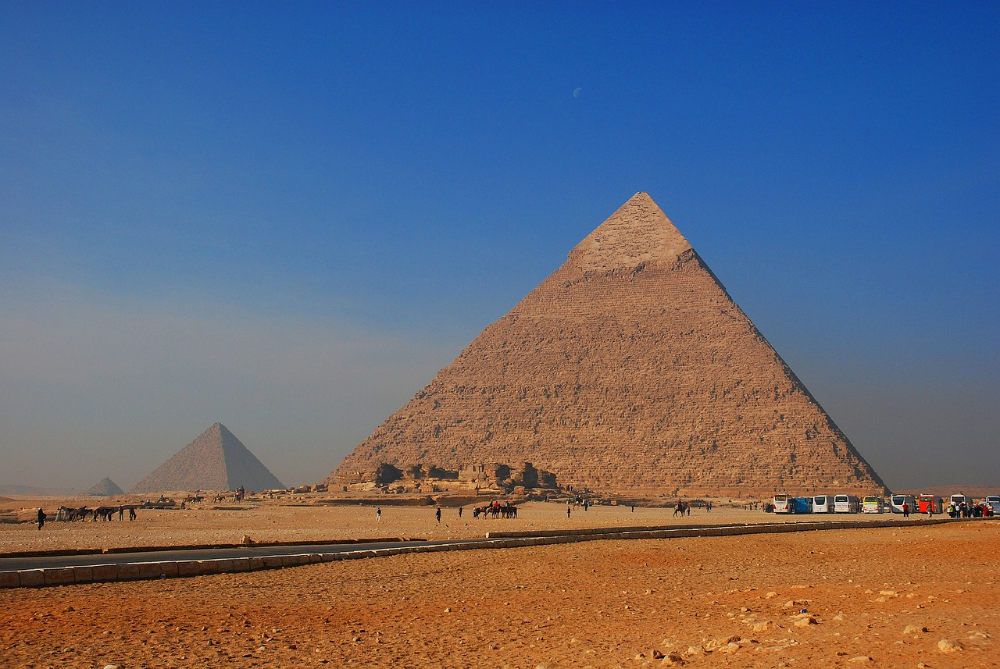
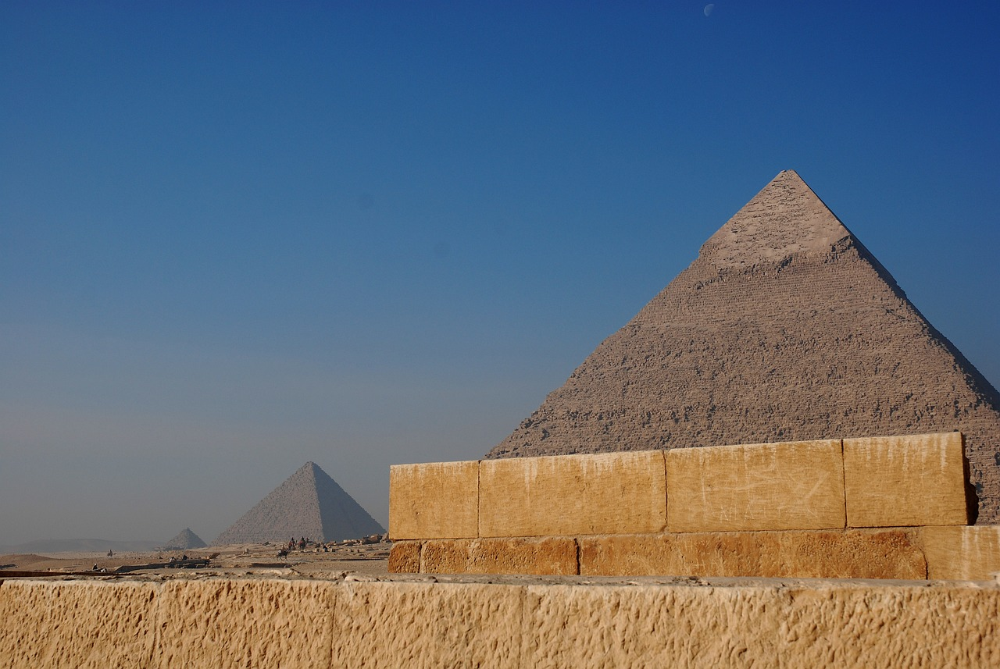
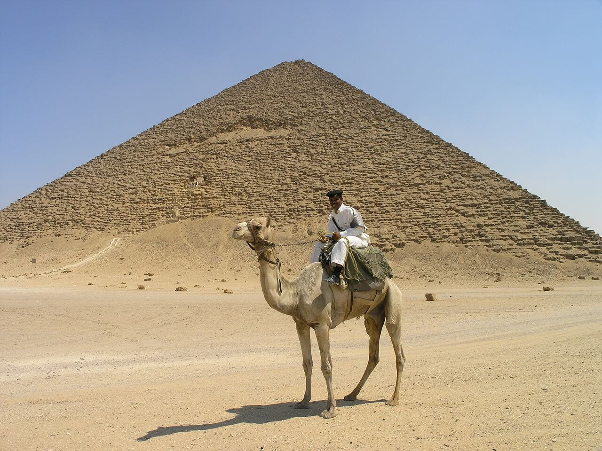
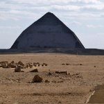
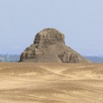
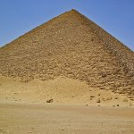
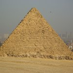
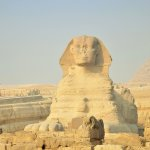
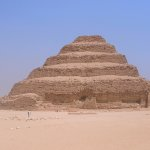
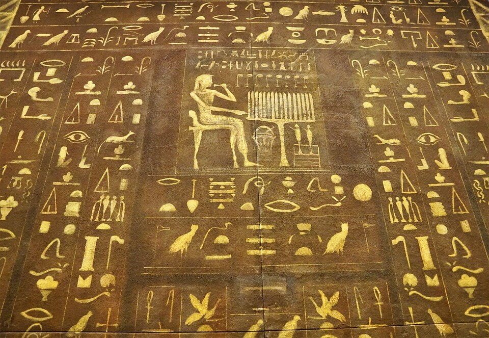

Au départ, les tombeaux des pharaons étaient de simples bâtiments rectangulaires en brique : les mastabas. Comme plus tard les pyramides, ils étaient tous bâtis sur la rive ouest du Nil, du côté où se couchait le soleil, car pour les Égyptiens, c’est le domaine des morts. A l’intérieur, on trouvait une chapelle où étaient déposées les offrandes destinées à accompagner le pharaon dans le royaume des morts et une salle où était installée une statue du défunt. Un puits menait à la chambre funéraire contenant le sarcophage.
La plus ancienne pyramide en pierre a été construite à Saqqarah vers 2800 av. J.-C. pour le pharaon Djeser (ou Djoser). Conçue par l’architecte Imhotep et constituée de six mastabas de plus en plus petits posés les uns sur les autres, elle faisait soixante mètres de hauteur. Un puits creusé dans le premier mastaba menait à la chambre funéraire. Cette « pyramide à degrés » ressemblait à un grand escalier grâce auquel le pharaon pouvait rejoindre le dieu Soleil.
Les pyramides les plus célèbres datent du troisième millénaire avant Jésus-Christ. Elles ont été bâties à Gizeh et portent les noms des pharaons qui les ont fait construire : Kheops, la plus haute (146 mètres), Khephren (143 mètres) et Mykérinos (66 mètres). Dans les trois cas, la chambre funéraire se trouve au cœur de l’édifice. Mais malgré les efforts des bâtisseurs, qui ont dissimulé les entrées, bloqué les portes avec d’énormes dalles de pierre ou conçu des labyrinthes sans issue, elles ont toutes été pillées durant l’Antiquité.

De gigantesques monuments en pierre, hauts parfois de plus de 100 mètres et construits par des milliers d’ouvriers esclaves.
Les plus célèbres se trouvent à Gizeh, près du Caire, l’actuelle capitale de l’Égypte.
D'où viennent les pierres des pyramides d’Egypte ?

Ce que vous voyez là, ce sont les pyramides de Gizeh. D'immenses tombeaux construits par les Égyptiens il y a plus de 4 500 ans. Ce sont de véritables prouesses d’architecture qui, aujourd’hui encore, laissent les archéologues perplexes.
Comment les Égyptiens ont-ils pu, avec les technologies de l’époque, déplacer toute ces pierres ?
Prenons la pyramide de Kheops. Elle mesure près de 140 mètres de hauteur. C’est la plus haute d’Égypte. Pour la construire, il y a plus de 4 000 ans, les Égyptiens ont utilisé des pierres trouvées sur place. Mais ils ont également dû acheminer des milliers de tonnes de cailloux jusqu’au plateau de Gizeh. Comme les pierres de calcaire blanc qui recouvraient à l’époque l’intégralité de la pyramide. Regardez, il en reste encore au sommet de la pyramide de Khephren.
Aujourd’hui, l'énigme est enfin résolue. Les archéologues ont trouvé la réponse dans un ancien rouleau de papyrus, l’un des plus vieux jamais trouvés : les Égyptiens transportaient ces pierres par bateau.
Ce sont les écrits de Merer, un chef de chantier qui a participé à la construction des pyramides. Il y raconte comment les chantiers de Gizeh étaient approvisionnés en pierres et dévoile l’existence d’un ingénieux système spécialement aménagé. Il y explique que les blocs de calcaire de près de 2,5 tonnes chacun sont transportés par bateau sur le Nil au départ de Tourah. Puis, des rives du Nil jusqu’au plateau de Gizeh, grâce à un système de digues permettant de rediriger les eaux du fleuve vers d’immenses bassins artificiels. .

Ce système a permis d’acheminer plusieurs milliers de blocs de pierre, des carrières de Tourah et d’Assouan, jusqu’aux pieds des pyramides !
Voilà un très lourd mystère de moins ! Reste à savoir comment les Égyptiens ont pu monter et empiler de tels mastodontes. Il existe bien quelques hypothèses mais pour l’instant, aucune n’est vérifiée. Le mystère perdure...
Les Pyramides d’Égypte
Tout ce qu’il faut savoir pour un voyage réussi!
Avec quelques 3 millions de visiteurs par an, les pyramides d’Egypte sont parmi les attractions touristiques les plus visitées au monde. Même si leur grande popularité, les nombreux reportages et films les rendent accessibles à toute la planète depuis internet ou la télévision, la rencontre « en vraie » avec ces merveilles du monde antique produit toujours un émerveillement sans pareil. Dans un mois vous serez aux pieds de ces immenses colosses de pierres.
Nous vous disons tout ce qu’il faut savoir pour un voyage réussi sur les lieux des Pyramides d’Égypte. Un voyage que vous pouvez facilement organiser par vous-même ou en passant par une agence de voyage.
Les Pyramides de Dahchour

Elles se situent à une quarantaine de kilomètres au sud-ouest du Caire et une quinzaine de Saqqarah. Ouvert au public depuis 1996, le site peut s’enorgueillir de posséder les 2 pyramides les mieux conservées d’Egypte construites chacune par ordre du roi Snéfrou (2613-2589 avant Jésus-Christ), père de Khéops et fondateur de la 4ème dynastie.
La pyramide Rhomboïdale :

Cette pyramide à la silhouette aplatie est peut-être un des monuments les plus étonnant du site de Dahchour. C’est la 2ème pyramide après l’entrée du site. On ne peut pas la visiter, mais juste en faire le tour.
Pyramide noire :

Elle se trouve à environ 1 kilomètre de la pyramide rhomboïdale sur un territoire militaire. Il est donc impossible de la visiter. Mais vous pourrez l’entrevoir en faisant le tour de la pyramide rhomboïdale.
Pyramide rouge :

Surnommée autrefois, « Snéfrou est resplendissant », elle porte aujourd’hui le nom de « pyramide rouge », en raison de la couleur du calcaire utilisé pour sa construction. Erigée après la pyramide rhomboïdale, c’est la première pyramide à face lisse construite et la troisième plus grande pyramide jamais construite dépassée uniquement par celle de Khéops et de Képhren. Il y a trois chambres funéraires impeccablement préservées à l’intérieur de la pyramide rouge, qui peuvent être visitées.
Pyramide de Mykérinos

Représentant 10% du volume de la pyramide de Khéops, cette « petite » pyramide, est posée à l’extrémité sud du plateau de Gizeh, et mesure 66 m de hauteur. Le pharaon Mykérinos aurait régné de 2490 à 2473 avant Jésus-Christ, juste après Khéphren.
Le sphinx :

Mi-animal, mi-homme, le fameux Sphinx de pierre, long de 73,5 mètres pour une hauteur de 20 m, et ses quelques 20 000 tonnes semble surveiller l’horizon et protéger les tombeaux.
Pyramide de Djoser :

C’est la plus ancienne pyramide. Sa construction remonterait à 2700 avant Jésus- Christ. Il s’agit d’une construction à degrés, une sorte d’escalier extérieur de 60 mètres de hauteur et menant vers les champs d’Ialou. Son architecte a été rendu célèbre en France grâce à une réplique culte.

Bonne découverte des pyramides !